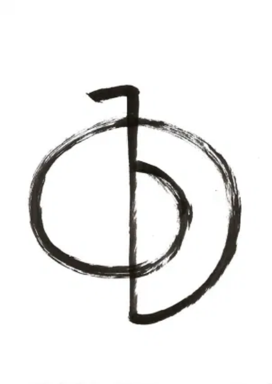
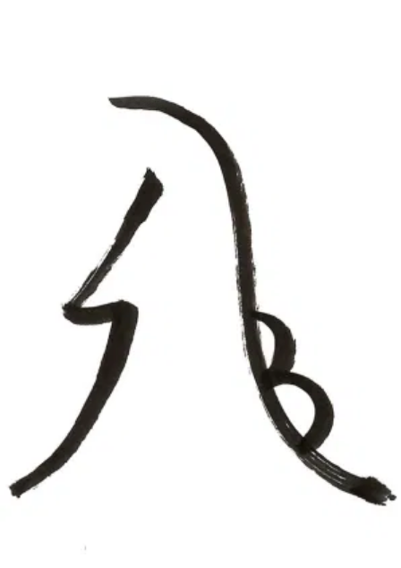
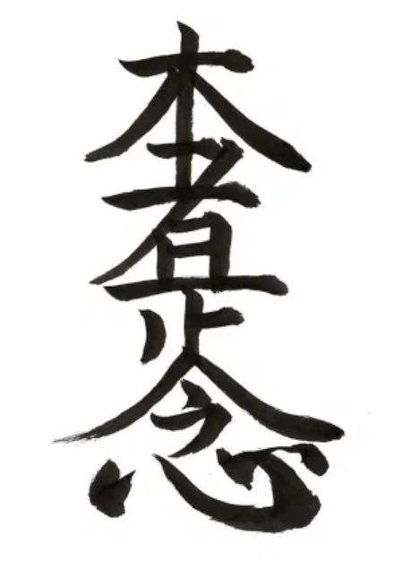
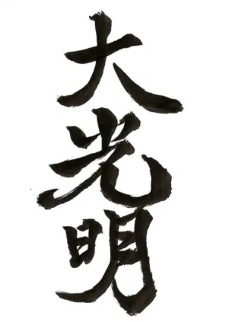

レイキ五戒
今日丈けは
怒るな
心配すな
感謝して
業をはけめ
人に親切に

超空霊
超空霊は「力」のエネルギーです。
特定の場所やものにエネルギーを集めてパワーアップする働きがあります。浄化力も高いので、薄暗く感じる場所に創ることで空間の浄化をすることができます。
- 色：赤
- 象徴：地球、火、力、陽、グラウンディング
- 効果：エネルギーの活性、パワーアップ
- 特徴：宇宙エネルギーとの繋がり、支配、創造
- こんな時に：空間の浄化、食べ物をパワーアップ、水を浄化、気合を入れる、マイナスエネルギーの浄化、エネルギー的な防御、実力を発揮する

聖壁
聖壁は「調和」のエネルギーです。
特に感情や意識面に働きかけて、バランスを崩してしまったところに調和を取り戻し、正常な状態へ戻す働きがあります。ストレスやトラウマ、PTSDなどに使うとよい結果が得られます。
聖壁はカルマの浄化にも用いることができます。自分自身の心の深い部分に降りて行って、過去の心の傷を癒したりするときに、聖壁が効果的です。
- 色：緑
- 象徴：月、水、感情、陰、調和、
- 効果：感情を穏やかにする、トラウマの解放、カルマの浄化
- 特徴：感情面のバランス、人間的な成長
- こんな時に：心の疲れ、ストレス解消、ハートのヒーリング、精神の安定、感情を穏やかにする、人間関係をスムーズに、許し、受容、執着を手放す、悪習慣やマイナス思考からの脱却。

本者是正念
本者是正念は時空超越、本質のエネルギーです。
離れた場所や、過去や未来など時間の概念を超えたところへフォーカスしてエネルギーを送ります。意識や感情よりも深い、無意識、魂の領域に働きかけます。
人としての自分から本質の自分に立ち戻って、すべてをありのままで受け入れ、認めます。根本的な変容と超越をもたらします。
- 色：藍色、紫
- 象徴：精神、魂、本質の自分、超越
- 効果：感情を穏やかにする、トラウマの解放、カルマの浄化
- 特徴：感情に左右されず本質を観る、霊的な成長
- こんな時に：離れた場所からヒーリング、自宅から出かける先へ光を送る、過去をマイナス感情を癒して手放す

大光明
大光明レイキのマスターシンボルであり、根源的な光そのものです。
すべてのシンボルは、太陽の光をプリズムで分けるようにして大光明から取り出されたものです。ですので、大光明の中には超空霊、聖璧、本者是正念、大光明の全てのシンボルのエネルギーが含まれます。
霊気で最も高い波動のシンボルである大光明は、高次元との繋がりを強めます。
- 色：白
- 象徴：宇宙、神、天
- 効果：パワー、バランス、本質
- 特徴：統合、昇華
- こんな時に：セルフヒーリング、瞑想、ヨガ、大事な決断や選択の時、ハイヤーセルフ、活路を開く